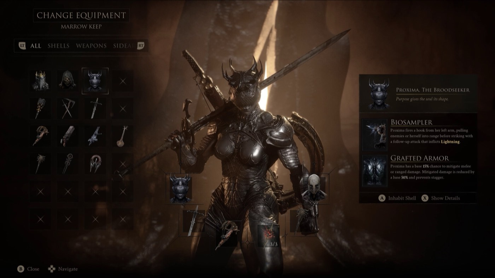

Shell guides
Shells, Bonds and Glimpses
Your Shell is both your class and your armour. There are eight, none of them are missable, and the currency you use to deepen them is scarcer than it looks.

Eight, not nine
The official site says eight playable Shells.Official The open beta build contained nine Shell records including Harros, and nobody has publicly mapped those nine records onto the retail eight.Unconfirmed Treat eight as the number and ignore the beta data unless Cold Symmetry says otherwise.
Nothing is missable
You can find every Shell after the final boss during free roam, before you choose to enter New Game Plus.Tested The first two are marked on your map automatically at the start.Tested That means there is no reason to rush Shell hunting and no reason to panic about a locked gate.
Do not pay to mark them
You can spend Glimpses in the Shellkeeper's room to reveal the location of the remaining Shells. This is a bad trade. Glimpses are also what raise Shell Bond, and Bond level is what unlocks Shell Memories.Tested Watching every Memory is required for one achievement, and there are not enough Glimpses in a single playthrough to get there.Tested
Guides here
What a build is made of
Five slots: Shell, Weapon, Sidearm, Seal and Tarstones. All five are scattered through the open world and have to be found before you can use them.Unconfirmed Tarstones come in four types — Support, Combat, Infusion and Ability — and are upgraded through Franz.Unconfirmed
Where this comes from
Every claim above carries a marker. These are the sources behind them, graded by how directly they touch the retail build.
- Official Mortal Shell II site OfficialEight playable Shells
- PowerPyx — All Shell Locations TestedNo Shells are missable; the first two are auto-marked; why paying Glimpses to mark Shells is a bad trade
- Game8 — Shells Tier List TestedRelative ranking of the eight Shells
- GameRant — New Game Plus TestedSeeking the Past needs more Glimpses than one playthrough provides
- games.gg — Beginner's guide UnconfirmedThe five build slots, Tarstone types, upgrading through Franz
- mortalshell2.org UnconfirmedNine Shell records in the open beta build, mapping unverified